Since version 1.3.5 Scribus offers a powerful new feature called Render Frames. Originally planned as a means to insert formulas into Scribus documents, the inventor, Hermann Kraus, has enabled the creation of almost any kind of special typesetting, like formulas, musical notation or chess notation, from within Scribus. The trick here is that Scribus uses other programs in the background and imports their output into a special frame type called Render Frames.
While this feature is extremely versatile, you must not forget that the use of it requires knowledge of the markup codes required by a particular program. These commands are beyond the scope of the Scribus documentation.
To create a Render Frame, click on the Render Frame icon in the menu bar, use Insert > Render Frame, or press D on the keyboard:
|
The cursor will then turn into a frame symbol with an L inside:
 |
The next step is to click-drag the frame and let up, just like you would do with a text frame. By default, Scribus will display a welcome message, which indicates that at least the configuration for LaTeX is correct. What you see below is the output from LaTeX, rendered in Scribus. The welcome message will be displayed in the language of the user interface as set in the Preferences. If no translation of the message is available, you will see the English version:
| 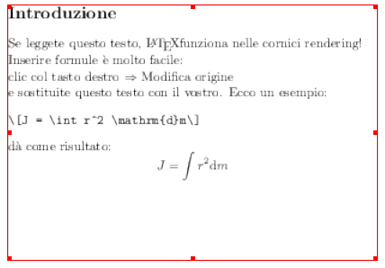 |
The screenshot above has been made with the default resolution of 72 dpi, which, obviously, isn’t enough for printing. You can easily change the resolution as you’ll learn below.
If you right-click on a Render Frame, the context menu shows an entry called “Edit Source:”
| 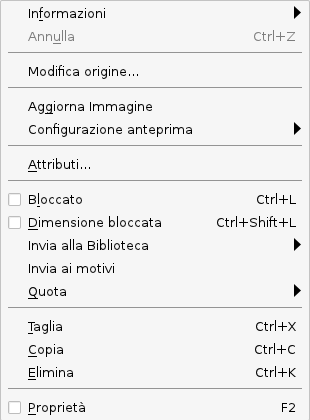 |
Selecting it brings up the “heart” of the Render Frame, the editor:
| 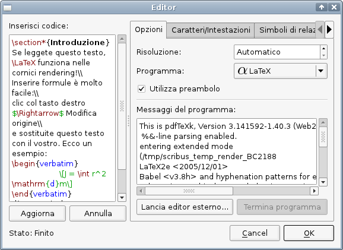 |
In Scribus 1.4, the editor is preconfigured to use LaTeX, Lilypond, gnuplot, dot/GraphViz and POV-Ray.
To the left you see a field with the caption “Enter Code.” Here you can insert the markup code for the output you want from the external program. For preconfigured renderers Scribus is shipped with some simple code snippets that will enable you to test whether the respective programs are installed and configured properly. As you can see, the editor provides syntax highlighting.
The “Update” button beneath the text field will update the content of the Render Frame, so that you can visually check the results of changes you made to the markup text without closing the editor. “Revert” will revert any change you made to the text. Please be aware that once you started editing the text, it’s no longer possible to change the markup renderer, e.g., if you started editing LaTeX source code, you cannot switch to Lilypond anymore.
To the right you see a row of tabs. These are not available for all preconfigured markup languages, so sometimes the editor only shows the “Options” tab.
In the “Options” tab, the first entry is “Resolution.” Its default setting is “Automatic,” thus, 72 dpi as explained above. You can easily change the resolution of the output to something more suitable for printing.
“Program” shows the list of supported programs. The editor will list all programs that are configured in File > Preferences> External Tools.
If you check “Use Preamble,” the editor will automatically use the preamble and the postamble as specified in the XML configuration files. See below for more details.
“Program Messages” shows the messages that would otherwise be displayed in a command-line interpreter. They are “intercepted” by Scribus, just like the final output, and they are often useful to find out what went wrong if the rendering failed.
If you click on “Run external editor,” Scribus will start the editor as specified in the Preferences, and “Kill Program” will stop the external program. This can be useful when the external program stumbles across an error you made in your markup that causes the external program to fail or even crash.
| 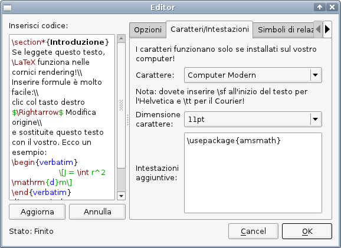 |
The first LaTeX tab is called “Fonts/Headers.” In the upper drop-down list you can set the font used for a Render Frame that uses LaTeX. By default, only four fonts are listed, but you can easily add more by editing the LaTeX XML configuration file as described in detail below: Just add another font under <list name="font" default=""> in the file. Please note that the font list for LaTeX (and many other markup programs) is probably completely different from the fonts available to you in Scribus and other programs, as LaTeX uses its own fonts and needs to be configured to use the Type 1, TrueType and OpenType fonts available to you in programs like Scribus or LibreOffice. For more information about LaTeX font configuration see the LaTeX Font Selection Guide (PDF).
The next drop-down list allows for changing the default font size. If you are used to LaTeX, you will already know that this is the setting for the base font. Other necessary font sizes, e.g. for superscript and subscript are determined by LaTeX. You will also note that the editor lists only a
selection of base font sizes. Again, you can easily add other sizes under <list name="fontsize" default="11pt">
in the LaTeX XML configuration file. Since there are almost no limits as to the possibilities you have for the configuration of a LaTeX file, you will appreciate the option to select different XML configuration files in File > Preferences > External Tools.
The text field “Additional Headers” allows for the insertion of additional headers to the preamble of the LaTeX markup, which will be stored within the Scribus SLA file.
Finally, you find different tabs with symbols and characters that can be created by LaTeX:
| 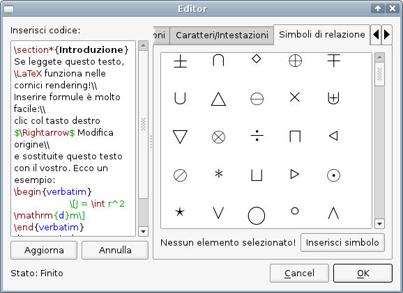 |
To insert a single symbol into your markup code, you can either select the symbol and click “Insert Symbol” or double-click on the icon in the field.
For more information see the official LaTeX website.
| 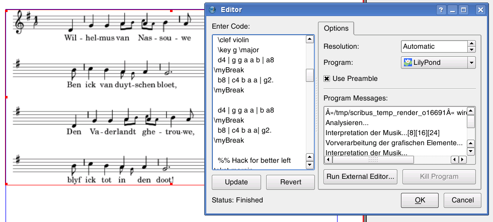 |
There are no additional options for Lilypond available.
For more information see the official Lilypond website.
| 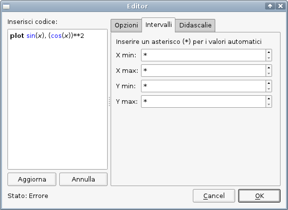 |
The gnuplot options are very basic. Under “Ranges” you can enter the start and end digits for the X and the Y axis. The default is an asterisk, which will result in gnuplot creating the digits automatically, according to the values set in the markup text.
| 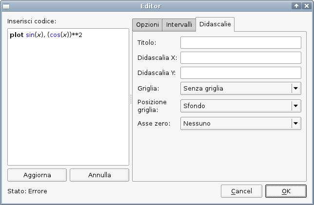 |
The tab called “Labels” serves as an assistant to determine some visual aspects of a graph:
For more information see the official gnuplot website.
There are no additional options for dot/Graphviz available.
For more information see the official Graphviz website.
| 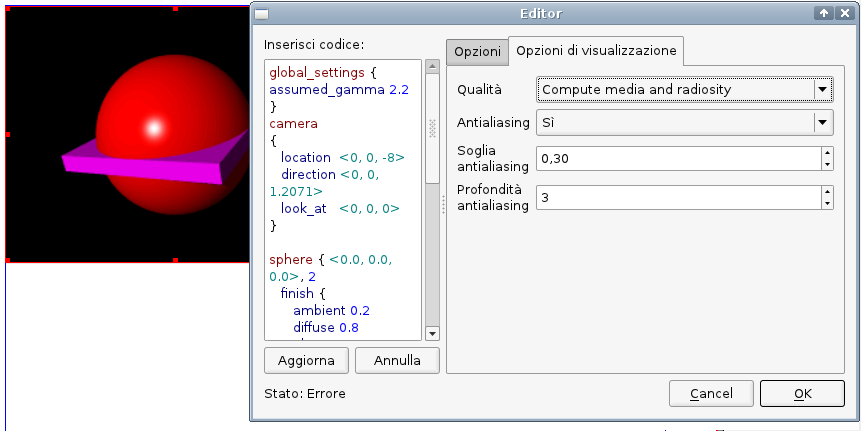 |
The editor offers only one tab for the rendering of POV-Ray files, namley “Rendering Options:”
For more information see the official POV-Ray website.
Once you have created the markup to your satisfaction, you can click the “OK” button.
If you made a mistake, and the external program cannot render your markup, Scribus will display an error message:
| 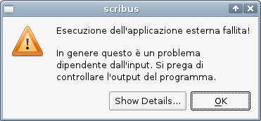 |
A blue “X” in the Render Frame along with an error message will then indicate that no content could be rendered:
| 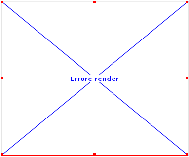 |
If you look at the Context Menu for Render Frames, you will get the impression that they are image frames. In a sense, that’s correct, as you can change the preview settings for Render Frames or update the content. There is, however, a major difference: As said above, the markup text ist stored within a Scribus file, and the rendered content is always created “on the fly.” Each time you open a Scribus file that contains a Render Frame, Scribus will run the program that’s necessary to render the content and create a temporary image file which will then be loaded into the frame. This is why Render Frames aren’t listed in Extras > Manage Images.
This behavior has some consequences. While you can use a Scribus file with images on another computer by using File > Collect for Output and copying the resulting archive to another machine, Render Frames require the presence of the used software on this machine. Moreover, the feature might not work between different operating systems, because the command-line options can be different.
Another limitation is that you can’t apply any image effects to Render Frames.
To make Render Frames work, you need to have the required programs installed on your computer. By default, Scribus supports five programs, namely LaTeX, Lilypond, gnuplot, dot/Graphviz and Lilypond. On Linux, your package manager will take care about the installation and the dependencies of the software. On other platforms you might need to install the programs separately and edit some configuration files.
If you open the tab “External Tools” in the Preferences, you see the configuration options for Render Frames at the bottom of the dialog:
| 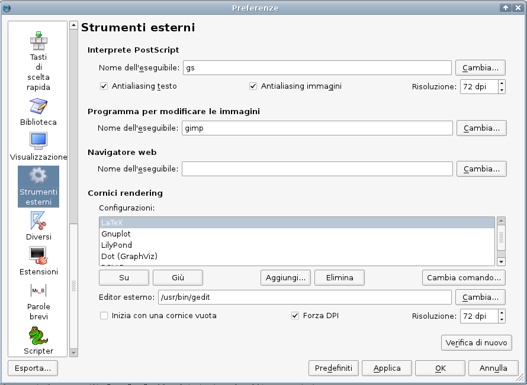 |
Under “Configurations,” Scribus shows the default configuration files. Each program you want to use from within Scribus needs a separate configuration file. To add a new program to your Render Frames, you have to create an XML file with some required settings. Below you see an abridged and commented gnuplot configuration file, which will serve as an example:
<editorsettings description="Gnuplot" icon="gnuplot.png"> This line sets the description of the program, as well as the icon for the drop-down list in the Render Frame Editor. It must be stored in the same directory as the XML file. You can use PNG, XPM and SVG icons.
<executable command="gnuplot"> This is the command-line call of the program. You can only use software that can work on the command-line. Also, the program needs to be able to create output in either PNG, PDF or EPS format. By default, Scribus uses the command-line options for Linux/UNIX systems.
<imagefile extension=".png"/> Here you tell the editor which file format it has to expect from the external program.
<highlighter> </highlighter> This part is mainly interesting for programmers, as it allows for the creation of indvidual syntax highlighting schemes by using Regular Expressions. For further information see: http://docs.kde.org/kde3/en/kdeutils/KRegExpEditor/index.html and http://doc.trolltech.com/4.4/qregexp.html.
<empty-frame-text> Here you can enter sample text in the markup language of the program you want to use, for instance:
plot sin(x), (cos(x))**2
<preamble> If the markup language you want to use requires a preamble, you can enter it here. It will not be displayed in the editor.
<postamble> If the markup language you want to use requires a postamble, you can enter it here. It will not be displayed in the editor.
<tab type="settings"> Here’s where translations to existing GUI strings as well as new tabs or other UI elements can be added via simple XML entries, for example:
<title><i18n>
To add a new configuration file, click on the “Add …” button, which will bring up a file dialog. Select your file and click “Open.” The file will then be added to your Render Frame configuration.
By moving entries of XML configuration files in the list up or down, you can change the order of entries in the editor’s drop down list. If you want to use a different XML configuration file for a particular markup language (for example, if you need another default preamble for LaTeX frames in a project), you can change the path to the alternative file by clicking on “Change …” or simply add a new configuration file with an appropriate name, like “MyLateX.”
| 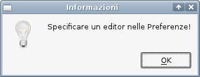 |
In addition, you have the option to start with an empty frame. By checking “Force DPI,” Scribus will render the output of every Render Frame with the resolution set in the spinbox to the right. It's set to 72 dpi by default for performance reasons. If you want to produce a document for professional printing, you will want to choose a higher resolution.